- About
- Diary
- People
- Events
- Reading
- Writing
- Meals
- Meetings
- Search
Malherbe, Corneille, Racine, Moliere, Boileau, Quinault, La Fontaine, Rousseau, de la Motte, Chaulieu, Gresset, Crebillon, Voltaire, Destouches, Regnard. Malebranche, Rousseau, Helvetius, Montesquieu, Mirabaud, Pascal, Nicole.No. I.

8. W. Tu.Brand Hollis called.The Ton, written by la. Wallace, actede.
10. Th.Hastings's trial. 12th day. resumede.
11. F.Dined[.?] at Leg of Pork{.} Doctor Priestley in London.e
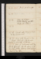13. Su. April.Dine at Holcrofts.
15. Tu.Dine at Hollis's. Doctor Horsley gazettede. Treaty with Hollande.
17. Th.Fawcet calls. King of France to his parliamente.
18. Fr.Dine with Fawcet in Vere Street. Holcroft calls, & sups. Bastard on Admirals 133 to 150e
19. Sa.Dine at Robinson's, with Kippis & Holcroft. See the opera Giulio Sabino, & the ballet of Adele de Ponthieue. Send to Van Effin.
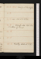20. Su. April.Beaufoy at Kensington.
22. Tu.circa. Call at B. Hollis's.
23. W.Holcroft calls. Send him corrections of Trenck.
26. Sa.Priestley dined at T. H.'se.
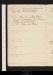Apr. 27. Su.Kensington Gardens, see baron Foxe. Call at Holcroft's.
28. M.Hear Sir Gilbert Elliote. Fawcet calls, & sups. See O' Brien & Grey, but do not speak.
May 4. Su.Dine at Holcroft's. Call on Mr Close, Tower Hill.
7. W.Hear Sir G. Elliote. Dine at Holcroft's.
8. Th.Tea, Holcroft's. Dinner at Cadel's on Gibbon's birth day & day of publication, Sheffield, Fullarton, Reynolds, Gillies, Kippise. Cour Plénièree.
9. Fr.Exhibitione. Nunducomar. 55 to 73e. Speak with O' Brien. Priestley from Londone.
10. Sa.Wilson calls: correct for him Graham's Letter to Pitt on Scotch Reform.
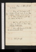May 11. Su.Dine at Holcroft's. Call on Wilson.
12. M.Dine at Robinson's, with Kippis, Holcroft, Meek, & chev. Mouradgea. Hanover Square concerte. See Yoel.
13. Tu.Dine at Hollis's, with Kippis, Lindsey & Planta
14. W.Di Dine with Fawcet in Vere Street. He sleeps in N. Street. Marshal for Southampton.
15. Th.Dine with Fawcet at Vere Street. He sleeps in Norfolk Street.
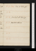
[fol. 6r] 18. Su. May.Dine at Holcroft's.
20. Tu.Vauxhal with Holcrofte.
21. W.Marshal returns.
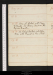27. Tu.Dine at Hollis's with Fraser & Planta. See Young Norman, the Russian traveller[:?]
28. W.See bishop Newton's exhibitione. Dine with Fawcet in Vere Street
3. Tu.Hear Sheridane. Earl Mansfield resignse. See miss Williams, who goes every day To the trial Sheridan's speech introduced by Geo. Harding[e?]e. 3, 6, 10, 13
6. F.Dine at Hollis's with Simpson, E. T. Call at Webb's. doMiss Williams's See
7. Sa.Sir Lloyd Kenyon a peere. R. P. Arden master of the rollse.
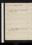June 8. Su.Holcroft dines.
9. M.Lord Kenyon lord chief justice of the king's benche.
13. F.Call at Webb's, d Hastings's trial adjournede.
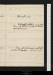17. Tu.Holcroft sups. Dine at Hollis's with Barnard & Fraser. Barry at tea. Call at Webbs, Miss Williams's
20. F.Dine at Robinson's with Hamilton & Raikes Holcroft sups.
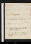24. Tu.Holcroft calls.
25. W.Willis calls. Holcroft calls.
27. F.Dine at Robinson's with Hamilton & Raikes.
28. Sa.Holcroft sups. Sir A. Macdonald attorney general; sir J. Scott, solicitore.
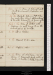June 29. Su.Dine at Holcroft's with Shield & Clementi; Parkinson and Bosse.
30. M.Dispute between Pitt & Thurlow, respecting Arden's appointment to the rolls, terminated in favour of the former.e
July 1. Tu.Dine at Hollis's with Lindsey. Go with Barry to see the Cerberus groupe by Locatelli e.
5. Sa. Dine at Clapham, sup at Epsom. E. Bearcroft chief justice of Chester; F. Burton a Welch judge, v. D. Be.[Not in London]
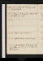July 6. Su. Dine at Dorking, sup at Guildford.[Not in London]
7. M. Dine at Kingston. Call on Kippis. Holcroft sups.[Not in London]
10. Th.Call at Miss Williams's.
11. F.Call at Parliament proroguede.
12. Sa.Call at Webb's. do Barry's. Earl of Chatham first lord of Admiraltye; lord Hood puisnee.
July 13. Su.Holcroft & Barry call. Mrs Cooper returnse. G. & A. Dyson dine.
14. M.See Canning: call on Hamilton: dine at Robinson's: nomination of S. J. Townshende: Shield at the Bedforde.
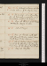15. Tu.Dine at Hollis's with Fraser, & Planta. Barry au soir.
17. Th.Dine at Shield's, with Holcroft, Clementi, Michi[e?], Condel, James Smith, Bosse & Mrs Soderini.
18. F.Call at Wilson's, Barry's & Hollis's. Go to the Hustingse. See Opie's picturese. Dine at the Leg of Pork. Ht sups.
19. Sa. Sleep at Kingston.[Not in London]
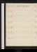July 20. Su. Arrive at Guildford.[Not in London]
21. M.[Not in London]
22. Tu.[Not in London]
23. W.[Not in London]
24. Th.[Not in London]
25. F.[Not in London]
26. Sa.[Not in London]
July 27. Su.T. Cooper at Guildford.[Not in London]
28. M.[Not in London]
29. Tu.[Not in London]
30. W.[Not in London]
31. Th.[Not in London]
Aug. 1. Fr.[Not in London]
2. Sa.[Not in London]
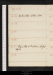Aug. 3. Su.[Not in London]
4. M.Westminter election closese.[Not in London]
5. Tu.[Not in London]
6. W.[Not in London]
7. Th.[Not in London]
8. F.Hamilton & Robinson at Guildford.[Not in London]
9. Sa.[Not in London]
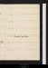10. Su.[Not in London]
11. M.[Not in London]
12. Tu.[Not in London]
13. W.[Not in London]
14. Th.Marshal for town.[Not in London]
15. F.[Not in London]
16. Sa.[Not in London]
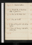Aug. 17. Su.Marshal returns.[Not in London]
18. M. Drink tea at Farnham: sleep at Godalmin.[Not in London]
19. Tu. Dine at the White Hart.[Not in London]
20. W.Dine at Smith's.[Not in London]
21. Th. Dine at Bagshot: sleep at Oakingham.[Not in London]
22. F. Dine at Reading: sleep at Bracknal fair.[Not in London]
23. Sa.[Not in London]
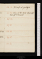24. Su.Holcroft at Guildford.[Not in London]
25. M.Dine at the White Hart with Holcroft & Fenwick.[Not in London]
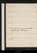4. Th.Jour de mauvaise nouvellee. Marshal for Southamptone.
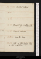Sep. 7. Su.Marshal returnse.
10. W.Marshal for Southamptone.
12. // Fr.Come to towne.
13. Sa.Call on Mrs Cooper. Sleep in Cold Bath Fields.
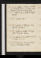Sep. 14. Su.Called on Barry: met Wilson & Heath. Dine at Hollis with Barry & J. H.: see Brand Hollis.
15. M.Ride & dine with Holcroft. Mrs do.
17. W.Explain to Holcrofte. Marshal to Guildforde.
18. Th.Calls on Kippis. Holcroft calls. Marshal returnse.
19. Fr.Call on, & am called on by Ht. T. Cooper in towne.
20. Sa.Drink tea at miss Williams's, with Kippis & Moore.
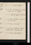Sep. 21. Su.Dine at Holcrofts.
22. M.Dine at Robinson's with Hamilton: sup at Holcroft's.
23. Tu.Holcroft explains to Robinsone.
24. W.Call on Robinson: drink tea with Mrs Cooper.
25. Th.Dine at Holcroft's.
26. F.Call on Robinson: M. for Southamptone: Holcroft calls.
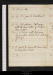29. M.T. C. goes to Shacklewele.
30. Tu.Ml returnse. Interview with Thomas Latter of Hertfordshire, esquire.
Oct. 1. W.Dine with Robinson. Conversation about bail. Call on Holcroft.
3. F.Write to Lomer & Shaw. Sleep in Marybone Street.
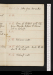Oct. 5. Su.Letter from Mr Latter.
7. Tu.Dine at Hollis's with Topham, Planta, Kippis & Towers. Call on Holcroft.
10. F.Holcroft calls. Read the Widow & the Will.
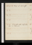Oct. 12. Su.Dine at Holcroft's.
16. Th.Holcroft calls. sup chez lui: see Mercier.
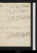Oct. 19. Su.Dine at Holcroft's, with Berwick. Call on Robinson.
20. M.Call on Holcroft: see Mercier.
21. Tu.Dine at Hollis's, with J. Hollis, Planta, Fraser, Kippis & Towers. Barry au soir.
24. F.Dine at Robinson's, with Mercier, le Vade, P. Robinson, Thurlow, Woodfal, Holcroft & Hamilton.
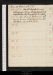Oct. 26. Su.Dine at Hollis's, with J. H. Tea at Miss Williams's, with major Barry, Swift, Cruickshank, Miss Weston, Mrs Barwel & Mrs Clarke.
27. M.Tea at miss Williams's, with major Barry, Swift, Cruickshank, & Mes Weston, Barwel & Clarke.
Nov. 2. // Su.Dine at Holcroft's with Mercier: Shield at tea. Sup at Pol. Robinson's, with Holcroft.
4. Tu.Call at Hamilton's, Shield's & miss Williams's. Second act of Robinson's farce.
7. F.Dine at Hamilton's, with Robinson, Archd, Holcroft, Nicholson, & Mercier. Le roi mourante.
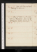Nov. 9. Sa.Dine at Fenwick's with Holcroft & Mercier.
11. Tu.Dine at Hollis's with Kippis, Topham & Perkins. Tea miss Williams's, with Kippis, Moore, m. Barry, S. Rogers, Gregory and Lewis.
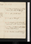17. M.Dine at Nicholson's, with Robinson, Hamiltons & Holcroft.
18. Tu.Capt Greville's duele.
19. W.sup at Holcroft's.
20. Th.N. Webb marriede: W. writes. Parliament meets: adjourns to 4 Dece.
21. F.Dine at Hollis's, with J. Hollis, Disney, Kippis & Towers.
22. Sa.Meilleur nouvellee. Robinson calls.
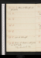Nov. 23. Su.Dine at Holcroft's: see Jas Aickin.
28. F.Call at Holcroft's
29. Sa.Dine at Hollis's, with J. Hollis & Dr Lister. King removes to Kewe.
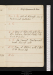Nov. 30. Su.King removes to Kew.
Dec. 1. M.Call at Holcroft's. Law of Parliament publishede.
3. W.Dine at Holcroft's, with Hamilton, Robinson, Woodfal, Shield, P. Robinson & Aickins.
4. Th.See Fawcet. Parliament meetse. Holcroft calls.
5. F.Dine at Hollis's, with J. Hollis & Towers. sup.
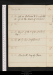8. M.Call on Robinson & Brand Hollis: Go to the House of Commonse.
10. W.Right of the P. of W. asserted by Foxe.
11. Th.do by lord Loughboroughe.
13. Sa.Charles IV, King of Spaine.
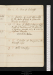Dec. 14. Su.Dine at Holcroft's.
15. M.Question of right deprecated by the dukes of York & Gloucester. Thurlow ambiguouse.
16. Tu.Dine at Hollis's. Barry at tea. sup. Right of Parliament to appoint a regency decided, 267 to 203. Fox censures Thurlowe.
18. Th.T. Cooper at Marybone Str. Holcroft sups.
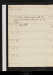22. M.Dine at Robinson's with Nicholson, Hamilton & Holcroft. See John Walker.
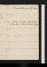28. Su.Dine at Holcroft's with Fenwic.
30. Tu.Dine at Hollis's, with sir Harry Houghton, see Brand Hollis & Barry{.} sup.
Contact --  -- Cookies/Privacy
-- Cookies/Privacy